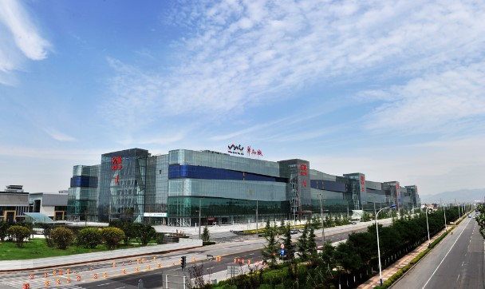

西安华南城项目总体分为商贸主题交易区、综合物流配套区、中央商务区以及生活服务配套区。目前，这几大版块都同时开工，等全面建成后，将实现以商品贸易为主、物流、商务、生活配套完善，集商品交易、会展中心、金融中心、总部办公、电子商务、全球物流、产品包装加工、仓储服务、生产服务、住宅、学校、亿元等配套于一体的现代化综合商贸物流集散地。
西安华南城整体计划分三期完成，首期开发面积超过400万平方米。目前，西安华南城2号交易广场品牌馆、五金机电交易中心A区主体落成，即将交付使用。2011年10月，五金机电交易中心盛大选铺，全国7000多五金商户落户华南城。
西安华南城综合商贸交易区，建立在世界各国商贸物流运营经验基础之上，在深圳华南城、和遍布全国各地的豪德城商贸物流园区运营实践中完善，商贸区规划科学、业态布局合理、在园区内将形成产业上下游之间的供需链、贸易信息整合提升的价值链，总部办公基地及配套设施优化的企业链，综合商贸及国际物流实体平台缩短的空间链。
弧形流线现代立面
现代感十足的商业立面，外部采用弧形流线形体设计，二层以上彩色玻璃幕墙，凹凸不平的波纹线，远观宛如海洋波纹，成为一道亮丽的风景线。
2号交易广场为地下一层、地上六层的开放式建筑，地下一层为西安最大地下停车场，一至六层为纺织服装用品展示交易场所
12处主入口
作为卖场的门面，高端形象展示的窗口，肩负客户对卖场的第一印象，提升卖场档次的同时，最大限度吸引客群，增强客户在卖场购物的愉悦心理。广场内部采用“鱼骨型”平面布局，以27米宽600米长的横向主通道为轴线，与5条22米宽122米长纵向通道为次轴线，纵横交错，形成一套清晰、鲜明的人行流线，明确指引客流到达每一商铺或展示厅。从二层至六层，每层的东西两大交易区，均有三座空中连廊，能够使客流方便快速地在整层交易区穿行，创造性地解决了国内特大型商贸广场客流难以引导的问题。
116部客梯，32部货梯，货物高效周转，客流便捷通畅
2号交易广场内部交通系统汲取华南城控股与新豪德(香港)控股30余座大型商贸基地的建设运营经验，由国内一流商业建筑设计专家团，经18次论证研讨而确定，致力于满足产业链式交易平台的综合功能，充分的实现了人货分流。共设置观光梯8部，客梯8部，5层共100部滚梯，单层32部货梯，保证人流、货源充沛，集聚更多财富。
6米层高，自由分割，灵活空间布局
2号交易广场的所有店铺，根据交易展示功能需求，拥有最佳匹配的交易空间：一层层高6米，二至六层层高5.5米。建筑采用10.8mX8.0m为主的柱网结构，使得所有店铺更加适合自由分割。
*结合华南城多年多地的实践经验设计，2号交易广场商铺具有“层层通透、铺铺宽敞，通达性好，可分割性强，可视率高，无暗铺无死角”的特殊优势。根据经营业态、功能需要量体裁衣、自由分割，不再为购买不到合适的商铺而东奔西走。量身定制的全通透店铺布局，充分满足您展示功能的全部需求。
西安最长临街室内步行街铺铺临街
南北向长600米宽22米的主通道，东西向长112米宽22米的纵向通道，划分店铺格局，又形成有效循环客流的通道，客流往来不息、周而复始，达成“无死角”经营模式。
大型中央空调，冬暖夏凉，人性化的舒适经营环境
2号交易广场，配备大型高端中央空调及独立出风口，在对室内温度进行智能调控的同时，保证经营空间空气清新，实现一个一年四季室内温度始终能够保持均衡的舒适经营环境。
2606个停车位，让停车难彻底成为历史
2号交易广场考虑驻场商户的长远利益，将地下一层打造为有2606个停车位的超大规模地下停车场，为驻场商户及采购客户提供停车服务，彻底解决老商圈中停车难的问题，为长远经营打下坚实基矗。